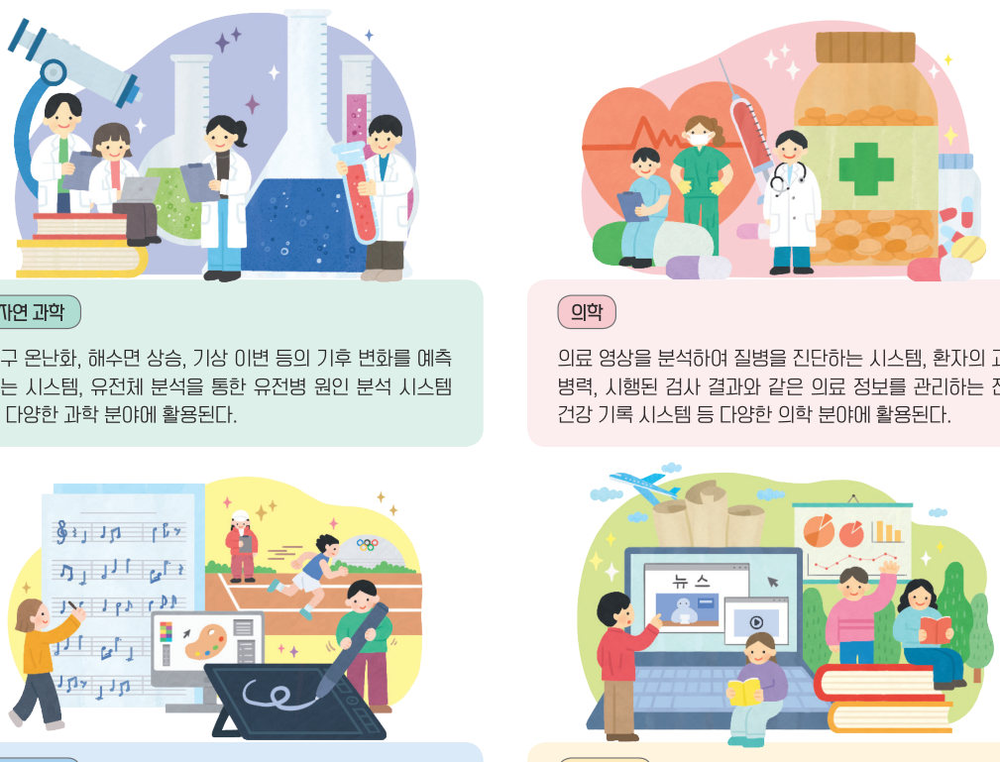
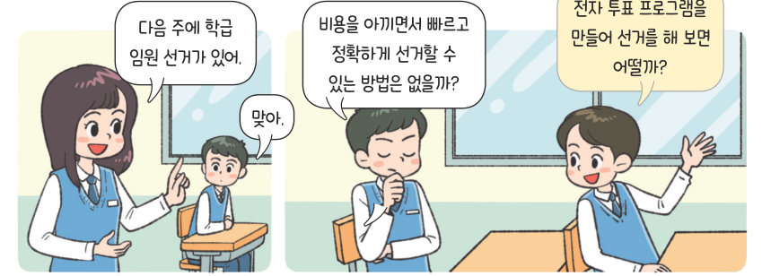

소프트웨어는 기후 예측부터 질병 진단, 스포츠 분석, 언어 학습까지 여러 학문 분야에서 문제를 해결한다. 인공지능 블록으로 만든 번역기와 마이크로비트로 하는 전자 투표 프로그램을 직접 움직여 보며 실생활 문제를 해결해 보자.
소프트웨어는 다양한 학문 분야의 문제 해결에도 활용되고 있다. 자연 과학, 의학, 예술·체육, 인문 사회 등의 분야에서 소프트웨어를 활용해 효과적으로 문제를 해결할 수 있다.
| 지구 온난화, 해수면 상승 등 기후 변화를 예측하는 시스템 | |
| 유전체 분석을 통한 유전병 원인 분석 시스템 | |
| 의료 영상을 분석하여 질병을 진단하는 시스템 | |
| 환자의 과거 병력과 검사 결과를 관리하는 전자 건강 기록 시스템 | |
| AR·VR로 관객에게 몰입감 있는 경험을 주는 예술 작품, 스포츠 비디오 분석 | |
| 설문 조사·경제 데이터를 분석하는 소프트웨어, 언어 번역 및 학습 소프트웨어 |
➊ 번역기 사용 방법을 알려 준다. ➋ 태극기 오브젝트를 누르면 ‘영어’, ‘중국어’, ‘일본어’ 중 하나의 언어를 입력받아 번역할 언어를 정한다. ➌ 스피커 오브젝트를 누르면 번역할 음성을 입력받아 설정한 언어로 번역하여 음성으로 안내한다.

➊ 프로그램이 시작되면 후보자 수를 입력받은 후 후보자 수만큼 후보자의 이름을 입력받고 후보자 득표수를 0으로 초기화한다. ➋ 투표하기 오브젝트를 누르면 마이크로비트의 A 버튼으로 후보자를 변경하고 B 버튼으로 선택을 완료한다. ➌ 결과 확인 오브젝트를 누르면 동점자 여부 또는 당선자를 알려 준다.
| A 버튼 | |
| B 버튼 | |
| 후보자 득표수(리스트) | |
| 최다 득표수(변수) | |
| 중복 여부(변수) |
| 소프트웨어는 의학, 예술·체육, 인문 사회 등 여러 학문 분야의 문제 해결에 활용된다. | |
| 전자 투표 프로그램에서 후보자 이름과 득표수는 변수 하나에 모두 저장한다. |
| 평가 기준 | 스스로 평가 |
|---|---|
| 실생활 문제를 해결하는 프로그램을 작성할 수 있는가? | |
| 협력을 통해 다양한 학문 분야의 문제를 해결하는 프로그램을 작성할 수 있는가? |